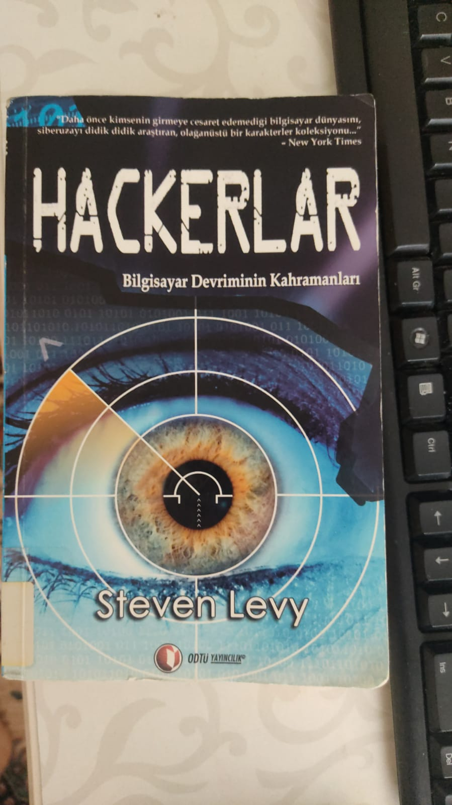
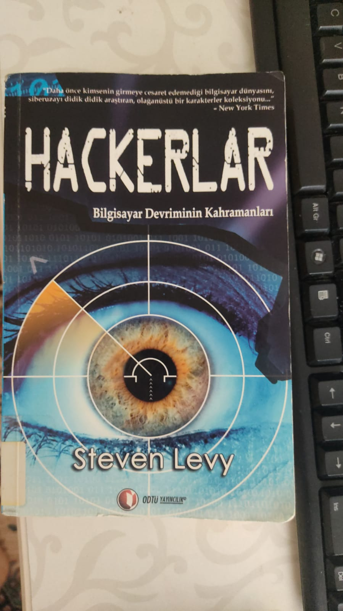

Merhaba, ben Şakir Kaan Okuyucu. Ankarada yaşıyorum. Orta Doğu Teknik Üniversitesi İnşaat Mühendisliği öğrencisiyim.
Bu kitap,1950'li dönemlerden başlayarak bilgisayar devrimine öncülük eden bir grup MIT öğrencisinin bu gelişimi nasıl gerçekleştirdiklerinden başlayarak. Günümüzdeki bilgisayar kavarmının olgulaşmasına kadar gelişen süreci tasfir ediyor.
 
